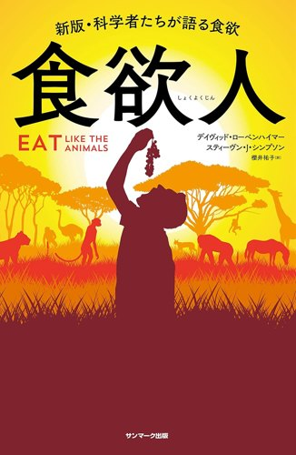

食欲人
せいやさん 紹介
食欲人
新版・科学者たちが語る食欲
著者はもともと、バッタを研究していた昆虫学者。生き物は、炭水化物・タンパク質・脂質の比率を無意識に調整していて、とくにタンパク質が一定量になるまで食べつづける、という本。
せいやさんの解説から
人間にとってちょうどいいのは、食べたカロリーの15%くらいをタンパク質からとること。今の食事は炭水化物と脂質が多くてタンパク質が薄いので、体は量で補おうとして食べすぎてしまう。
「体はタンパク質を求めてる。塩辛いスナックを食べても、タンパク質の欲は満たされないから太ってしまう」
安くつくれるものほどタンパク質が削られやすい、というお金の仕組みの話まで。
「なるほど」「ちょっと目線が変わる」の声があちこちから。
せいやさんは、読んだ内容をnoteにもまとめている：『食欲人』を読んで――「なぜ食べ過ぎるのか」をタンパク質から考える